“我在秒杀 iPhone XS 的支付页面卡了 3 秒，最后没抢到”，用户嘶声力竭地反馈了一个卡顿问题。
“莫慌莫慌”，等我打开 Android Studio， 用上一讲学到的几个工具分析一下就知道原因了。
“咦，在我这里整个支付过程丝滑般流畅”。这个经历让我明白，卡顿跟崩溃一样需要“现场信息”。因为卡顿的产生也是依赖很多因素，比如用户的系统版本、CPU 负载、网络环境、应用数据等。
脱离这个现场，我们本地难以复现，也就很难去解决问题。但是卡顿又非常影响用户体验的，特别是发生在启动、聊天、支付这些关键场景，那我们应该如何去监控线上的卡顿问题，并且保留足够多的现场信息协助我们排查解决问题呢？
卡顿监控
前面我讲过监控 ANR 的方法，不过也提到两个问题：一个是高版本的系统没有权限读取系统的 ANR 日志；另一个是 ANR 太依赖系统实现，我们无法灵活控制参数，例如我觉得主线程卡顿 3 秒用户已经不太能忍受，而默认参数只能监控至少 5 秒以上的卡顿。
所以现实情况就要求我们需要采用其他的方式来监控是否出现卡顿问题，并且针对特定场景还要监控其他特定的指标。
1. 消息队列
我设计的第一套监控卡顿的方案是基于消息队列实现，通过替换 Looper 的 Printer 实现。在 2013 年的时候，我写过一个名为 WxPerformanceTool 的性能监控工具，其中耗时监控就使用了这个方法。后面这个工具在腾讯公共组件做了内部开源，还获得了 2013 年的年度十佳组件。
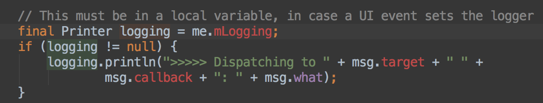
还没庆祝完，很快就有同事跟我吐槽一个问题：线上开启了这个监控模块，快速滑动时平均帧率起码降低 5 帧。我通过 Traceview 一看，发现是因为上面图中所示的大量字符串拼接导致性能损耗严重。
后来很快又想到了另外一个方案，可以通过一个监控线程，每隔 1 秒向主线程消息队列的头部插入一条空消息。假设 1 秒后这个消息并没有被主线程消费掉，说明阻塞消息运行的时间在 0～1 秒之间。换句话说，如果我们需要监控 3 秒卡顿，那在第 4 次轮询中头部消息依然没有被消费的话，就可以确定主线程出现了一次 3 秒以上的卡顿。
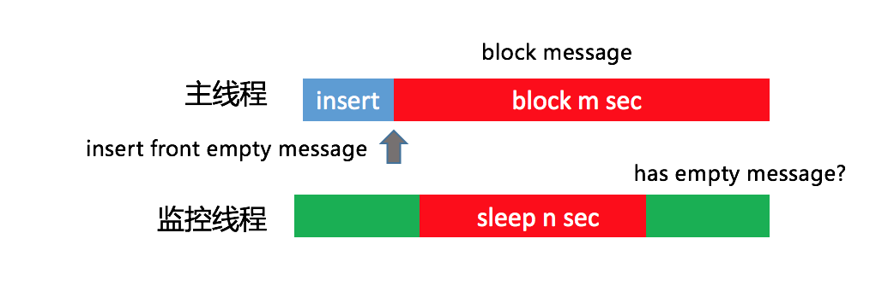
这个方案也存在一定的误差，那就是发送空消息的间隔时间。但这个间隔时间也不能太小，因为监控线程和主线程处理空消息都会带来一些性能损耗，但基本影响不大。
2. 插桩
不过在使用了一段时间之后，我感觉还是有那么一点不爽。基于消息队列的卡顿监控并不准确，正在运行的函数有可能并不是真正耗时的函数。这是为什么呢？
我画张图解释起来就清楚了。我们假设一个消息循环里面顺序执行了 A、B、C 三个函数，当整个消息执行超过 3 秒时，因为函数 A 和 B 已经执行完毕，我们只能得到的正在执行的函数 C 的堆栈，事实上它可能并不耗时。
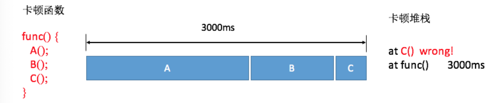
不过对于线上大数据来说，因为函数 A 和 B 相对比较耗时，所以抓取到它们的概率会更大一些，通过后台聚合后捕获到函数 A 和 B 的卡顿日志会更多一些。
这也是我们线上目前依然使用基于消息队列的方法，但是肯定希望可以做到跟 Traceview 一样，可以拿到整个卡顿过程所有运行函数的耗时，就像下面图中的结果，可以明确知道其实函数 A 和 B 才是造成卡顿的主要原因。
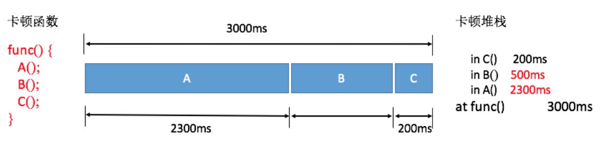
既然这样，那我们能否直接利用 Android Runtime 函数调用的回调事件，做一个自定义的 Traceview++ 呢？
答案是可以的，但是需要使用 Inline Hook 技术。我们可以实现类似 Nanoscope 先写内存的方案，但考虑到兼容性问题，这套方案并没有用到线上。
对于大体量的应用，稳定性是第一考虑因素。那如果在编译过程插桩，兼容性问题肯定是 OK 的。上一讲讲到 systrace 可以通过插桩自动生成 Trace Tag，我们一样也可以在函数入口和出口加入耗时监控的代码，但是需要考虑的细节有很多。
-
避免方法数暴增。在函数的入口和出口应该插入相同的函数，在编译时提前给代码中每个方法分配一个独立的 ID 作为参数。
-
过滤简单的函数。过滤一些类似直接 return、i++ 这样的简单函数，并且支持黑名单配置。对一些调用非常频繁的函数，需要添加到黑名单中来降低整个方案对性能的损耗。
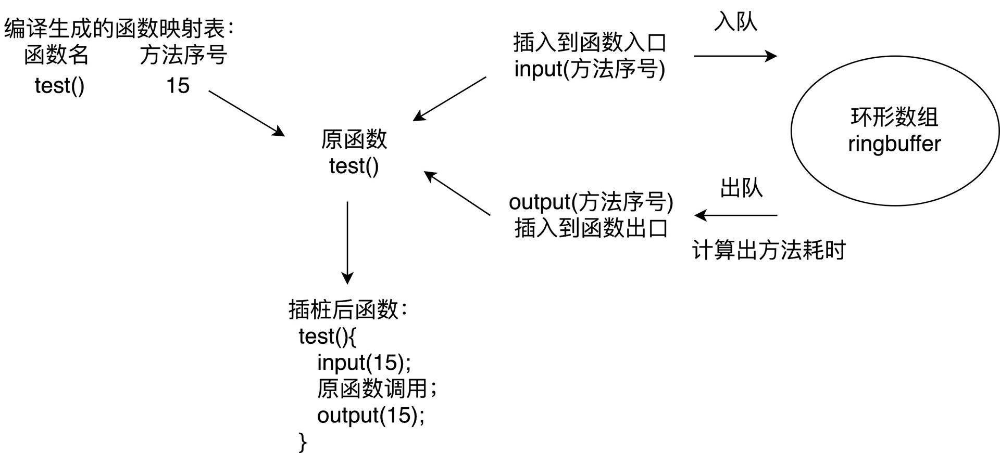
基于性能的考虑，线上只会监控主线程的耗时。微信的 Matrix 使用的就是这个方案，因为做了大量的优化，所以最终安装包体积只增大 1～2%，平均帧率下降也在 2 帧以内。虽然插桩方案对性能的影响总体还可以接受，但只会在灰度包使用。
插桩方案看起来美好，它也有自己的短板，那就是只能监控应用内自身的函数耗时，无法监控系统的函数调用，整个堆栈看起来好像“缺失了”一部分。
3. Profilo
2018 年 3 月，Facebook 开源了一个叫Profilo的库，它收集了各大方案的优点，令我眼前一亮。具体来说有以下几点：
第一，集成 atrace 功能。ftrace 所有性能埋点数据都会通过 trace_marker 文件写入内核缓冲区，Profilo 通过 PLT Hook 拦截了写入操作，选择部分关心的事件做分析。这样所有 systrace 的探针我们都可以拿到，例如四大组件生命周期、锁等待时间、类校验、GC 时间等。
不过大部分的 atrace 事件都比较笼统，从事件“B|pid|activityStart”，我们并不知道具体是哪个 Activity 的创建。同样我们可以统计 GC 相关事件的耗时，但是也不知道为什么发生了这次 GC。
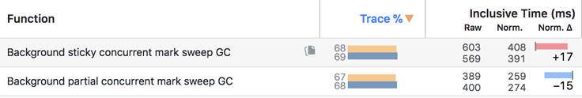
第二，快速获取 Java 堆栈。很多同学有一个误区，觉得在某个线程不断地获取主线程堆栈是不耗时的。但是事实上获取堆栈的代价是巨大的，它要暂停主线程的运行。
Profilo 的实现非常精妙，它实现类似 Native 崩溃捕捉的方式快速获取 Java 堆栈，通过间隔发送 SIGPROF 信号，整个过程如下图所示。
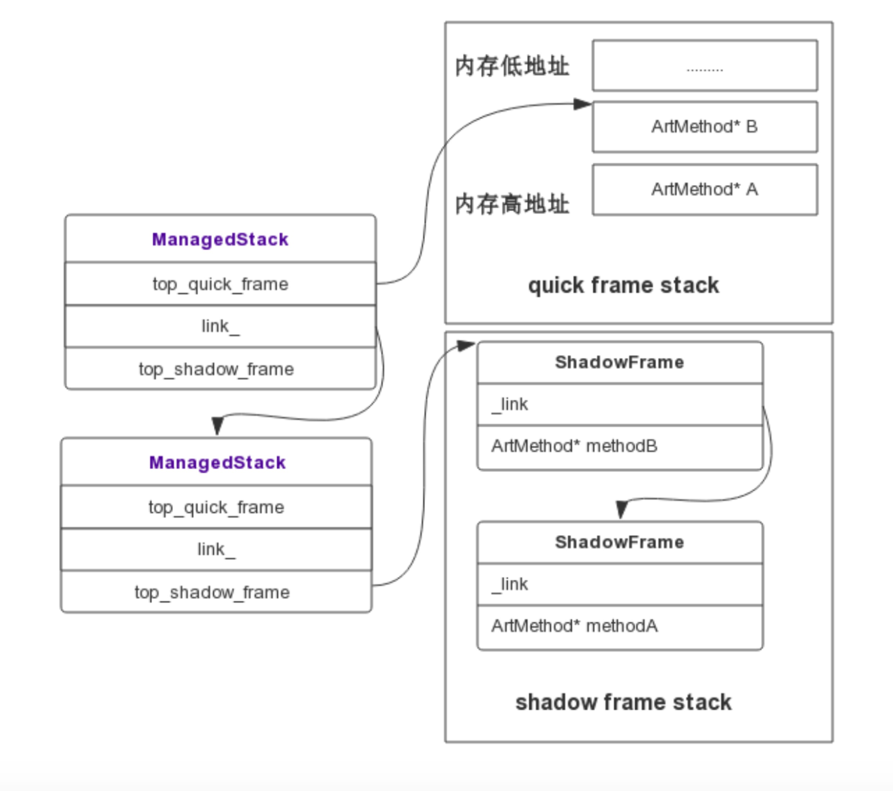
Signal Handler 捕获到信号后，拿取到当前正在执行的 Thread，通过 Thread 对象可以获取当前线程的 ManagedStack，ManagedStack 是一个单链表，它保存了当前的 ShadowFrame 或者 QuickFrame 栈指针，先依次遍历 ManagedStack 链表，然后遍历其内部的 ShadowFrame 或者 QuickFrame 还原一个可读的调用栈，从而 unwind 出当前的 Java 堆栈。通过这种方式，可以实现线程一边继续跑步，我们还可以帮它做检查，而且耗时基本忽略不计。代码可以参照：Profilo::unwind和StackVisitor::WalkStack。
不用插桩、性能基本没有影响、捕捉信息还全，那 Profilo 不就是完美的化身吗？当然由于它利用了大量的黑科技，兼容性是需要注意的问题。它内部实现有大量函数的 Hook，unwind 也需要强依赖 Android Runtime 实现。Facebook 已经将 Profilo 投入到线上使用，但由于目前 Profilo 快速获取堆栈功能依然不支持 Android 8.0 和 Android 9.0，鉴于稳定性问题，建议采取抽样部分用户的方式来开启该功能。
先小结一下，不管我们使用哪种卡顿监控方法，最后我们都可以得到卡顿时的堆栈和当时 CPU 运行的一些信息。大部分的卡顿问题都比较好定位，例如主线程执行一个耗时任务、读一个非常大的文件或者是执行网络请求等。
其他监控
除了主线程的耗时过长之外，我们还有哪些卡顿问题需要关注呢？
Android Vitals 是 Google Play 官方的性能监控服务，涉及卡顿相关的监控有 ANR、启动、帧率三个。尤其是 ANR 监控，我们应该经常的来看看，主要是 Google 自己是有权限可以准确监控和上报 ANR。
对于启动和帧率，Android Vitals 只是上报了应用的区间分布，但是不能归纳出问题。这也是我们做性能优化时比较迷惑的一点，即使发现整体的帧率比过去降低了 5 帧，也并不知道是哪里造成的，还是要花很大的力气去做二次排查。
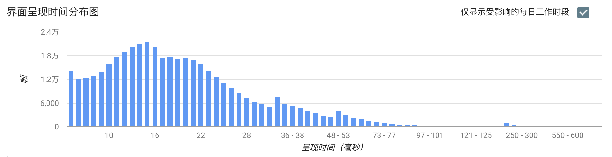
能不能做到跟崩溃、卡顿一样，直接给我一个堆栈，告诉我就是因为这里写的不好导致帧率下降了 5 帧。退一步说，如果做不到直接告诉我堆栈，能不能告诉我是因为聊天这个页面导致的帧率下降，让我缩小二次排查的范围。
1. 帧率
业界都使用 Choreographer 来监控应用的帧率。跟卡顿不同的是，需要排除掉页面没有操作的情况，我们应该只在界面存在绘制的时候才做统计。
那么如何监听界面是否存在绘制行为呢？可以通过 addOnDrawListener 实现。
getWindow().getDecorView().getViewTreeObserver().addOnDrawListener我们经常用平均帧率来衡量界面流畅度，但事实上电影的帧率才 24 帧，用户对于应用的平均帧率是 40 帧还是 50 帧并不一定可以感受出来。对于用户来说，感觉最明显的是连续丢帧情况，Android Vitals 将连续丢帧超过 700 毫秒定义为冻帧，也就是连续丢帧 42 帧以上。
因此，我们可以统计更有价值的冻帧率。冻帧率就是计算发生冻帧时间在所有时间的占比。出现丢帧的时候，我们可以获取当前的页面信息、View 信息和操作路径上报后台，降低二次排查的难度。
正如下图一样，我们还可以按照 Activity、Fragment 或者某个操作定义场景，通过细化不同场景的平均帧率和冻帧率，进一步细化问题排查的范围。
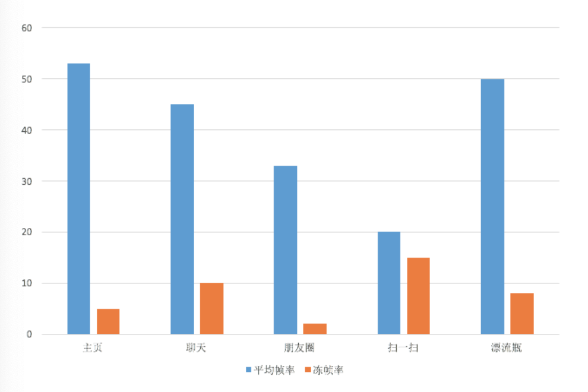
2. 生命周期监控
Activity、Service、Receiver 组件生命周期的耗时和调用次数也是我们重点关注的性能问题。例如 Activity 的 onCreate() 不应该超过 1 秒，不然会影响用户看到页面的时间。Service 和 Receiver 虽然是后台组件，不过它们生命周期也是占用主线程的，也是我们需要关注的问题。
对于组件生命周期我们应该采用更严格地监控，可以全量上报。在后台我们可以看到各个组件各个生命周期的启动时间和启动次数。
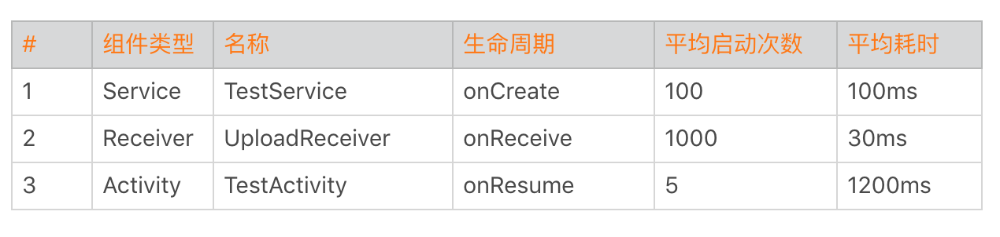
有一次我们发现有两个 Service 的启动次数是其他的 10 倍，经过排查发现是因为频繁的互相拉起导致。Receiver 也是这样，而且它们都需要经过 System Server。曾经有一个日志上报模块通过 Broadcast 来做跨进程通信，每秒发送几千次请求，导致系统 System Server 卡死。所以说每个组件各个生命周期的调用次数也是非常有参考价值的指标。
除了四大组件的生命周期，我们还需要监控各个进程生命周期的启动次数和耗时。通过下面的数据，我们可以看出某些进程是否频繁地拉起。
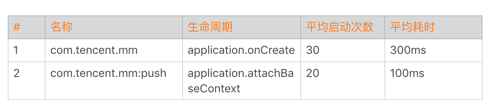
对于生命周期的监控实现，我们可以利用插件化技术 Hook 的方式。但是 Android P 之后，我还是不太推荐你使用这种方式。我更推荐使用编译时插桩的方式，后面我会讲到 Aspect、ASM 和 ReDex 三种插桩技术的实现，敬请期待。
3. 线程监控
Java 线程管理是很多应用非常头痛的事情，应用启动过程就已经创建了几十上百个线程。而且大部分的线程都没有经过线程池管理，都在自由自在地狂奔着。
另外一方面某些线程优先级或者活跃度比较高，占用了过多的 CPU。这会降低主线程 UI 响应能力，我们需要特别针对这些线程做重点的优化。
对于 Java 线程，总的来说我会监控以下两点。
-
线程数量。需要监控线程数量的多少，以及创建线程的方式。例如有没有使用我们特有的线程池，这块可以通过 got hook 线程的 nativeCreate() 函数。主要用于进行线程收敛，也就是减少线程数量。
-
线程时间。监控线程的用户时间 utime、系统时间 stime 和优先级。主要是看哪些线程 utime+stime 时间比较多，占用了过多的 CPU。正如上一期“每课一练”所提到的，可能有一些线程因为生命周期很短导致很难发现，这里我们需要结合线程创建监控。
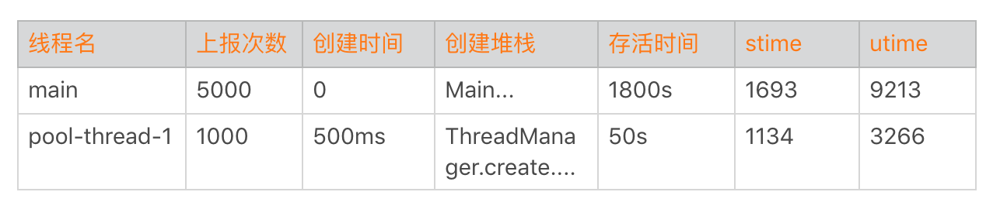
看到这里可能有同学会比较困惑，卡顿优化的主题就是监控吗？导致卡顿的原因会有很多，比如函数非常耗时、I/O 非常慢、线程间的竞争或者锁等。其实很多时候卡顿问题并不难解决，相较解决来说，更困难的是如何快速发现这些卡顿点，以及通过更多的辅助信息找到真正的卡顿原因。
就跟在本地使用各种卡顿分析工具一样，卡顿优化的难点在于如何把它们移植到线上，以最少的性能代价获得更加丰富的卡顿信息。当然某些卡顿问题可能是 I/O、存储或者网络引发的，后面会还有专门的内容来讲这些问题的优化方法。
总结
今天我们学习了卡顿监控的几种方法。随着技术的深入，我们发现了旧方案的一些缺点，通过不断地迭代和演进，寻找更好的方案。
Facebook 的 Profilo 实现了快速获取 Java 堆栈，其实它参考的是 JVM 的 AsyncGetCallTrace 思路，然后适配 Android Runtime 的实现。systrace 使用的是 Linux 的 ftrace，Simpleperf 参考了 Linux 的 perf 工具。还是熟悉的配方，还是熟悉的味道，我们很多创新性的东西，其实还是基于 Java 和 Linux 十年前的产物。
还是回到我在专栏开篇词说过的，切记不要浮躁，多了解和学习一些底层的技术，对我们的成长会有很大帮助。日常开发中我们也不能只满足于完成需求就可以了，在实现上应该学会多去思考内存、卡顿这些影响性能的点，我们比别人多想一些、多做一些，自己的进步自然也会更快一些。
课后作业
看完我分享的卡顿优化的方法后，相信你也肯定还有很多好的思路和方法，今天的课后作业是分享一下你的卡顿优化的“必杀技”，在留言区分享一下今天学习、练习的收获与心得。
课后练习
我在上一期中提到过 Linux 的 ftrace 机制，而 systrace 正是利用这个系统机制实现的。而 Profilo 更是通过一些黑科技，实现了一个可以用于线上的“systrace”。那它究竟是怎么实现的呢？
通过今天这个Sample，你可以学习到它的实现思路。当你对这些底层机制足够熟悉的时候，可能就不局限在本地使用，而是可以将它们搬到线上了。
当然，为了能更好地理解这个 Sample，可能你还需要补充一些 ftrace 和 atrace 相关的背景知识。你会发现这些的确都是 Linux 十年前的一些知识，但时至今日它们依然非常有用。
COMMUNITY NOTES
读者评论
明明是Android开发课，但是绍文老师在很多文章中都会提到Linux，JVM相关的知识，深入优化就是深入底层啊，目前的能力不足以消化这篇文章，同时希望绍文老师和鹏飞老师推荐相关书籍
已经掉队了，底层基础太差了😭
张老师，看完这篇文章我已经开始怀疑人生了，掌握这么多知识您是怎么办到的，而且对那些黑科技了如指掌，还能举一反三，感觉就跟玩一样！能不能赐教一下怎么做到的？
如果给完全没有卡顿的APP打分100的话，对于大厂的APP本来就有90分，追求的是如何将分数提到95，98，99，甚至100，邵文老师所讲主要也是针对这块；但对于很多想我这样的小公司开发者来说，受人力物力时间所限，想做到的其实是先达到90分，而这块专栏涉及的有限，对于跟我类似的受众不够友好。
作者您好，我们应用的很多用户，android系统都是4.4版本的，因为分包dex优化的原因,导致第一次安装或者版本升级时启动的时间非常的长，想问问您有什么好的优化措施，谢谢
请教下老师，hook抓到的systrace里面有其它进程的信息吗，跟python systrace.py抓到的内容有什么差别
老师，看了您这些内容，对我的第一感觉是要对源码很熟悉，那您对学习源码有什么建议吗，（看的晚了，不知道现在评论还会不会回）
给大家推荐一个方法，解析Traceview生成的trace文件，即可知道这个阶段所有运行的函数，序列化一下，就能生成需要插桩的白名单列表。
张老师，刚试了你给的Sample，plthook实现的自定义ftrace，B与E事件日志不成对？这个怎么看每一个事件的耗时？每个B找最近的E作为截止算时间吗？还是按照一个B对应一个E去算？还有一个问题就是课程提到通过hook thread_create去监控线程，这个是指监控应用的线程吗？如果是的话，那系统的线程比如binder，jit等如何去监控？话说这个张老师能把hook 线程创建的实现也放Sample?
就开篇前两章看懂了 之后看到现在一脸懵逼 我还是早点转行吧
绍文老师，想问下卡顿信息监控上报，有什么策略判断吗，哪些方法函数需要监控，哪些不需要监控？
profilo是怎么用起来的?创建profilo时候都要报错
请问下，目前有个需求是对卡顿和启动耗时做性能指标线上预警，对于 activity、fragment的生命周期启动耗时的监控数据，还有主线程卡顿堆栈的数据，应该按什么的维度去统计比较合理呢
牛逼！
老师你好，最学习了你的专栏，准备优化一下项目，用一个第三方开源工具检测了一下，发现项目有大量的“主线程阻塞超过70ms”，请问主线程执行耗时操作，多久才算耗时，该如何定义？
张老师，文章里面提到的inline hook技术可以多介绍一点吗？跟前面文章提到的PLT hook是一样的吗？
有个问题请教 用empty message 去检查卡顿 ，比如1s 没消费 ，就能说message 卡顿1s 吗 ？ 如果空消息前边有几个消息 比如3个 ，现在正在执行第三个 我觉得也正常啊 不能说明卡顿啊
这节课，讲的就是真正技术实战了，果断断层，哈哈
通过 proc/cpuinfo 好像拿不到 cpu 核数，只能获取到打开了的 cpu 核心信息。。
基本看不太懂，准备好好泡泡simple 和 补充一些底层知识